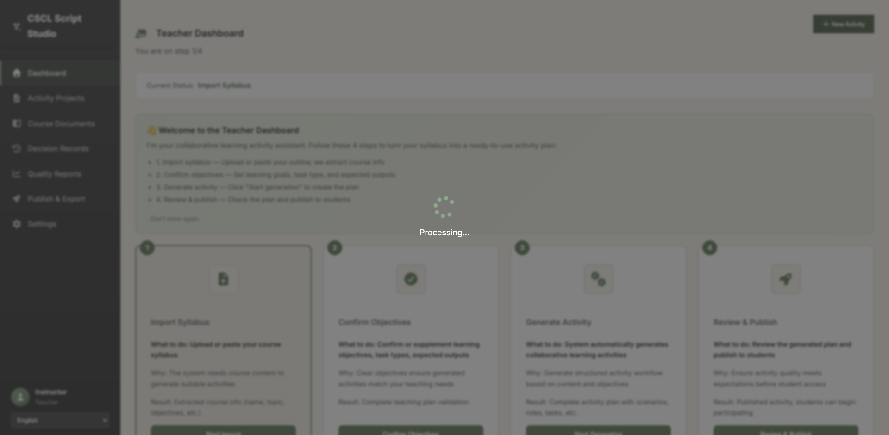

📋 问题验证列表
✅ Issue #11, #12: 侧边栏
PASS
侧边栏正常显示,找到8个导航链接
❌ Issue #13: Edit/Duplicate按钮
FAIL
无法找到"活动项目"链接进行测试
❌ Issue #10: 课程文档
FAIL
无法找到"课程文档"链接进行测试
❌ Issue #9: 质量报告
FAIL
无法找到"质量报告"链接进行测试
❌ 新建活动流程
FAIL
无法找到"新建活动"按钮
⏸️ Issue #1, #2, #3: Step 1上传
未测试
由于无法进入新建活动流程,未能测试
⏸️ Issue #14: Initial Idea
未测试
由于无法进入Step 2,未能测试
⏸️ Issue #4: 按钮国际化
未测试
由于无法进入Step 3,未能测试
⏸️ Issue #5, #6, #7, #8: Step 4功能
未测试
需要完成脚本生成后才能测试
📸 测试截图
4. 侧边栏验证 (Issue #11, #12)

⚠️ 注意事项
- 测试发现无法通过XPath定位到侧边栏中的导航链接,这可能是因为:
- 链接文本使用了不同的语言或格式
- 链接是通过JavaScript动态生成的
- 需要更精确的选择器
- 建议查看截图04_sidebar.png来确认实际的侧边栏结构
- Issue #1-#8, #14需要能够进入新建活动流程才能测试
- 建议手动测试或改进选择器策略
🔍 下一步建议
- 检查截图04_sidebar.png,确认侧边栏的实际HTML结构
- 使用浏览器开发者工具检查元素的实际属性和类名
- 更新XPath选择器以匹配实际的DOM结构
- 考虑使用CSS选择器代替XPath
- 测试是否需要等待JavaScript完成渲染